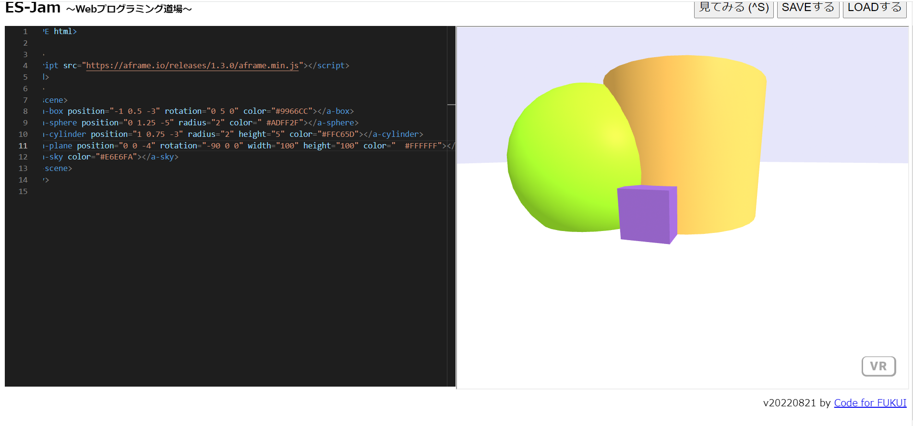
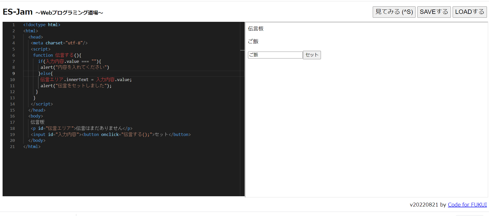

第3週目
3-1 JavaScript体験：VR空間を作る

VR空間
1.内容
aframeというサイトからコードをコピーして簡単なVR空間を作った。
2.感想
JavaScriptでVR空間を作ることができるということを知らなかったので初めて作ってとても楽しかったし、とてもいい勉強になった。今世界にあるVR空間はこのように作られているのかなと思った。そう思うととても大変な作業で自分から見える映像をより鮮明にしようと思ったらとても費用と時間がかかるんだろうなと思った。そのため、VR空間をを作れたことは本当に嬉しかったです。
3-2 JavaScript体験：伝言プログラムを作る

伝言板
1.内容
配られた資料を見ながらコードを書き伝言プログラムを作った。
2.感想
Javascriptを自分で書いてプログラムを作ったことは少ししかなかったのでとても楽しかった。エラーが起きた時は冷静にどこが間違っているかを確認することもできた。エラーが起きた時は間違いを探して対処することが大切ということを知った。今回の経験からプログラムを自分でもっと作ってみたいと思った。今回のプログラムは簡単なものだったけどもっと複雑なプログラムを書きたいと思いました。
3-3 VR体験
1.内容
metaのVRゴーグルを使って先ほど作ったVR空間でボールを打って遊んだ
2.感想
VRゴーグルを使ってさっき作ったVR空間で遊べて本当に楽しかったです。VRにはとても興味があるので授業でVR空間に行けるのが本当に嬉しいです。VR空間はまるでリアルの世界のような気もしてもっとVR空間がリアルな世界になったらVR空間にずっといる人も現れるんじゃないかと思った。